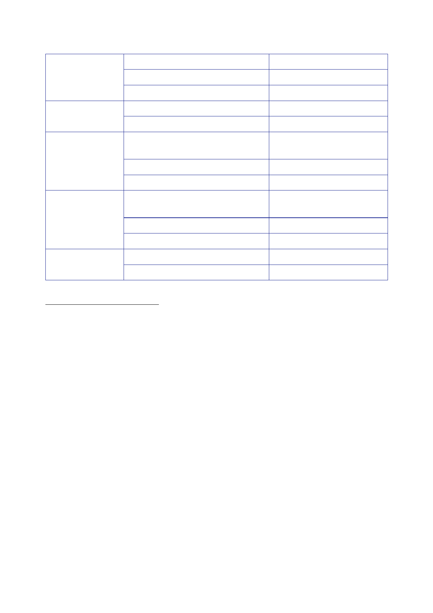

Op TELIC
VIII
Op TELIC
IX
Op TELIC
X
Op TELIC
XI
Op TELIC
XII
31
May
18
July
September
21 February
2007
31
May
September
October
November
December
7 March
2008
31
May
22
July
13
October
9.7 | May
2008 to October 2009
223
The
National Archives, [undated], ‘Operations in Iraq: Facts and
Figures’. The figure describes UK
military
personnel deployed in Iraq.
224
House of
Lords, Official
Report, 18 July
2006, column WS83. The figure describes the total
number
of UK
troops in Iraq.
225
House of
Commons, Official
Report, 11
September 2006, column 111WS; House of Commons,
Official Report, 10
October 2006, columns 172-173. This figure describes the UK force
package, including
a temporary
deployment of 360 troops between September 2006 and January
2007.
226
House of
Commons, Official
Report, 21
February 2007, column 264. This figure refers to number
of
forces.
227
The
National Archives, ‘Operations in Iraq: Facts and Figures’. The
figure describes UK military
personnel
deployed in Iraq.
228
House of
Commons, Official
Report, 8 October
2007, column 30. The figure describes troops in Iraq.
229
House of
Commons, Official
Report, 14
January 2008, column 885W. Figure calculated by
subtracting
the 300
troops referred to in the table from 5,500.
230
House of
Commons, Official
Report, 14
January 2008, column 885W. Figure calculated by
subtracting
the
reduction of 100 troops referred to in the table from
5,200.
231
House of
Commons, Official
Report, 14
January 2008, column 885W. Figure calculated by
subtracting
the
reduction of 600 troops referred to in the table from
5,100.
232
House of
Commons, Official
Report, 5
December 2007, column 1224W. The figure describes the
number of
personnel deployed to Iraq.
233
House of
Commons, Official
Report, 14
January 2008, column 885W.
234
House of
Commons, Official
Report, 7 March
2008, column 2849W. The figure describes UK force
levels in
southern Iraq.
235
The
National Archives, [undated], ‘Operations in Iraq: Facts and
Figures’. The figure describes UK
military
personnel deployed in Iraq.
236
House of
Lords, Official
Report, 22 July
2008, column 1677. The figure describes UK forces in
southern
Iraq.
237
The
Times, 13
October 2008, Thank You,
and Goodbye.
467